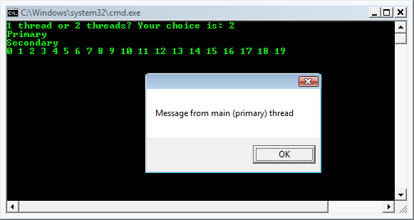

Multi-Threading II 2017
In the previous chapter, we briefly browsed the multi-threading issues with a couple of simple examples.
Before we move on and address the issues of concurrency and synchronization, we need to step back a little and need to learn more about the basics of threading.
The entry point (the Main() method) of any program (executable assembly), runs on the primary thread. In the following example, we'll use Thread.CurrentThread property to retrieve a currently executing Thread type. Once we obtained the current thread, we'll be able to print out all the information of the thread.
using System;
using System.Threading;
namespace MultiThreadII
{
public class ThreadStats
{
public static void Main()
{
Thread pThread = Thread.CurrentThread;
pThread.Name = "MyPrimaryThread";
Console.WriteLine("Name of current AppDomain: {0}",
Thread.GetDomain().FriendlyName);
Console.WriteLine("ID of current Context: {0}",
Thread.CurrentContext.ContextID);
Console.WriteLine("Thread Name: {0}", pThread.Name);
Console.WriteLine("thread started?: {0}", pThread.IsAlive);
Console.WriteLine("Priority Level: {0}", pThread.Priority);
Console.WriteLine("Thread State: {0}", pThread.ThreadState);
Console.ReadLine();
}
}
}
Output of the code:
Name of current AppDomain: MultiThreadII.exe ID of current Context: 0 Thread Name: MyPrimaryThread thread started?: True Priority Level: Normal Thread State: Running
By default, all threads have a property level of Normal.
Here is the System.Threading.ThreadPriority enumeration:
public enum ThreadPriority
{
AboveNormal,
BelowNormal,
Highest,
Idle,
Lowest,
Normal, // default
TimeCritical
}
A thread's priority level offers a hint to the CLR regarding the importance of the thread's activity. So, a thread with the Highest priority is not necessarily guaranteed to be given the high precedence. In most cases, we'll seldom need to directly alter a thread's priority level.
When we need to create additional threads, these are the steps we may follow:
- Create a method to be the entry point for the new thread.
- Create a new ParameterizedThreadStart ( or ThreadStart) delegate, passing the address of the method defined in step 1 to the constructor.
- Create a Thread object, passing the ParameterizedThreadStart/ThreadStart delegate as a constructor argument.
- Establish any initial thread characteristics such as name, priority and so on.
- Call the Thread.Start() method. This starts the thread at the method referenced by the delegate created in step 2 as soon as possible.
The limitation of ThreadStart is that we can't pass in parameters for processing. But the ParameterizedThreadStart delegate allows us a single parameter of type System.Object. Given that anything can be represented as a System.Object, we can pass in any number of parameters via a custom class. Note that the ParameterizedThreadStart delegate can only point to methods that return void
Here is the example code:
using System;
using System.Threading;
namespace MultiThreadII
{
public class ThreadTest
{
public static void Main()
{
Thread newThread = new Thread(ThreadTest.threadJob);
newThread.Start("Shared Thread");
ThreadTest t = new ThreadTest();
newThread = new Thread(t.moreThreadJob);
newThread.Start("Instance Thread");
}
public static void threadJob(object data)
{
Console.WriteLine("{0}", data);
}
public void moreThreadJob(object data)
{
Console.WriteLine("{0}", data);
}
}
}
In this example, we'll be allowed to choose whether the application will use just the single primary thread or two threads.
If we choose to use only one thread, primary thread will print out the numbers and then pops up the message box after finishing the print. However, we decide to use two threads, the background (secondary) thread will take care of the printing while the primary thread will show the message box.
using System;
using System.Threading;
using System.Windows.Forms;
namespace MultiThreadII
{
public class PrintingThread
{
public void threadJob()
{
Console.WriteLine(Thread.CurrentThread.Name);
for (int i = 0; i < 20; i++)
{
Console.Write("{0} ", i);
Thread.Sleep(200);
}
}
public static void Main()
{
Console.Write("1 thread or 2 threads? Your choice is: ");
string numberOfThread = Console.ReadLine();
Thread pThread = Thread.CurrentThread;
pThread.Name = "Primary";
Console.WriteLine(Thread.CurrentThread.Name);
// make instance
PrintingThread pt = new PrintingThread();
switch (numberOfThread)
{
case "1":
pt.threadJob();
break;
case "2":
Thread bThread = new Thread(new ThreadStart(pt.threadJob));
bThread.Name = "Secondary";
bThread.Start();
break;
default:
pt.threadJob();
break;
}
MessageBox.Show("Message from main (primary) thread");
Console.ReadLine();
}
}
}

When we run the code with a single thread, we'll find that the message box will not display the message until the all numbers have been printed out to the console. But if we select two threads, the message box comes up immediately because the time consuming task is taken care of by the secondary thread. In other words, by using multithread, our application becomes more responsive.
The ThreadStart delegate can point only to the methods that return void and does not take any arguments. However, if we want to pass data to the method, we need to use the ParameterizedThreadStart delegate type. Because the ParameterizedThreadStart can point to any method taking a System.Object parameter, in the following example, we'll create a custom class which contains the numbers to be added:
using System;
using System.Threading;
using System.Windows.Forms;
namespace MultiThreadII
{
class Params
{
public int a, b;
public Params(int m, int n) { a = m; b = n; }
}
public class PrintingThread
{
static void threadJob(object data)
{
Console.WriteLine("ID of thread in Main(): {0}",
Thread.CurrentThread.ManagedThreadId);
Params p = (Params)data;
Console.WriteLine("a = {0}, b = {1}", p.a, p.b);
}
public static void Main()
{
Console.WriteLine("ID of thread in Main(): {0}",
Thread.CurrentThread.ManagedThreadId);
Params p = new Params(77, 99);
Thread t = new Thread(new ParameterizedThreadStart(threadJob));
t.Start(p);
}
}
}
Output is:
ID of thread in Main(): 1 ID of thread in Main(): 3 a = 77, b = 99
As we see from the output, we were able to process data by passing object to the method for the thread.
What's the difference between foreground threads and background threads?
- Foreground Threads have the ability to prevent the current application from terminating. The CLR will not shut down an application until all foreground threads have ended. In other words, foreground threads keep the application alive for as long as any one of them is running while background threads do not. By default, threads we create explicitly are foreground threads while pooled threads are background threads.
- Background Threads (also called daemon threads) are viewed by the CLR as expendable paths of execution that can be ignored at any point in time even if they are currently active doing work. So, if all foreground threads have terminated, any and all background threads are automatically terminated when the application domain unloads.
Note that a thread's foreground/background status has no relation to its priority or allocation of execution time.
Then, what are primary threads and worker threads?
Foreground and Background threads are not synonymous with primary and worker threads. By default, every thread we create via the Thread.Start() method is automatically a foreground thread. So, the AppDomain will not unload until all threads of execution have completed their works.
We can query or change a thread's background status using its IsBackground property:
using System;
using System.Threading;
namespace MultiThreadIII
{
public class BackgroundThread
{
public static void Main(string[] args)
{
Thread worker = new Thread(delegate() {
Console.ReadLine(); });
if (args.Length > 0) worker.IsBackground = true;
worker.Start();
}
}
}
If the program is running with no argument, the worker thread assumes foreground status and will wait on the ReadLine() statement for the user to press Enter. In the mean time, the main thread exits, but the application keeps running since a foreground thread is still alive.
However, on the other hand, if an argument is passed to Main(), the worker thread assumes background status, and the program exits immediately as the main thread ends and will automatically terminating the ReadLine().
When a background thread terminates in this manner, any finally blocks are circumvented. This is a problem if our code has finally blocks to perform some cleanup work. To avoid this, we can explicitly wait such background threads upon exiting an application. There are two ways of accomplishing this:
- If the thread has been created by us, we can Join() on the thread.
- If it's from thread pool, we can use an event wait handle.
In either case, we should specify a timeout, so that we can abandon a renegade thread should it refuse to finish for some reason. We want our application to close without any user's extra action.
Thread safety is a computer programming concept applicable in the context of multi-threaded programs. A program or method is thread-safe if it has no indeterminacy in the face of any multithreading scenario. In other words, a piece of code is thread-safe if it functions correctly during simultaneous execution by multiple threads.
Thread safety is a key challenge in multi-threaded programming. It was not a concern of most application programmers but since the late 1990s has become a commonplace issue. We usually achieve the thread-safety with locking and by reducing the possibilities of interactions between threads.General-purpose types are rarely thread-safe because of the following:
- The development cost in full thread safety can be significant, particularly if a type has many fields. Each field is a potential for interaction in an arbitrarily multithreaded context).
- Thread safety can entail a performance cost (payable, in part, whether or not the type is actually used by multithreading).
- A thread-safe type does not necessarily make the program using it thread-safe, and sometimes the work involved in the latter can make the former redundant.
Thus, thread safety is usually implemented just where it needs to be, in order to handle a specific multithreading scenario.
But there are ways to cheat and have large and complex classes run safely in a multithreaded environment.
- Re-entrancy
Writing code in such a way that it can be partially executed by one task, reentered by another task, and then resumed from the original task. This requires the saving of state information in variables local to each task, usually on its stack, instead of in static or global variables. - Mutual exclusion
Access to shared data is serialized using mechanisms that ensure only one thread reads or writes the shared data at any time. Great care is required if a piece of code accesses multiple shared pieces of data: problems include race conditions, deadlocks, livelocks, starvation, and various other ills enumerated in many operating systems textbooks. - Thread-local storage
Variables are localized so that each thread has its own private copy. These variables retain their values across subroutine and other code boundaries, and are thread-safe since they are local to each thread, even though the code which accesses them might be reentrant. - Atomic operations
Shared data are accessed by using atomic operations which cannot be interrupted by other threads. This usually requires using special machine language instructions, which might be available in a runtime library. Since the operations are atomic, the shared data are always kept in a valid state, no matter what other threads access it. Atomic operations form the basis of many thread locking mechanisms. - One way of achieving thread safety is to sacrifice granularity by wrapping large sections of code - even access to an entire object - around a single exclusive lock, enforcing serialized access at a high level. This tactic is, in fact, essential if we want to use thread-unsafe thirty-party code (or most Framework types, for that matter) in a multithreaded context. The trick is simply to use the same exclusive lock to protect access to all properties, methods, and fields on the thread-unsafe object. The solution works well if the object's methods all execute quickly, otherwise there will be a lot of blocking.
- Another way to cheat is to minimize thread interaction by minimizing shared data. This is an excellent approach and is used implicitly in stateless middle-tier application and web page servers. Since multiple client requests can arrive simultaneously, the server methods they call must be thread-safe. A stateless design, which is popular for reasons of scalability, intrinsically limits the possibility of interaction because classes do not persist data between requests. Thread interaction is then limited just to static fields one may choose to create, for such purposes as caching commonly used data in memory and in providing infrastructure services such as authentication and auditing.
- The other approach is to use an automatic locking regime. The .NET Framework does exactly this, if we subclass ContextBoundObject and apply the Synchronization attribute to the class. Whenever a method or property on such an object is then called, an object0wide lock is automatically taken for the whole execution of the method or property. This approach reduces the thread-safety burden, however, it creates problems of its own: deadlock that would not otherwise occur, impoverished concurrency, and unintended reentrancy. For these reasons, manual locking is generally a better option.
Ph.D. / Golden Gate Ave, San Francisco / Seoul National Univ / Carnegie Mellon / UC Berkeley / DevOps / Deep Learning / Visualization